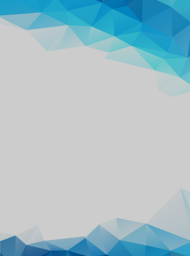
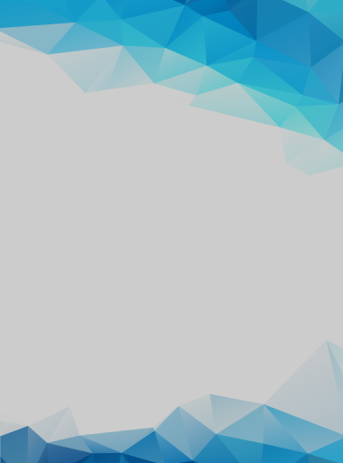

Neuro
Search
Нейросёрч - это сервис который поможет вам найти всё что вы хотите.
Читать подробнее Нейросёрч - это сервис который поможет вам найти всё что вы хотите.
Читать подробнее Меня зовут Гриша. Мне 12 лет,
учусь в 7 класс.А ещё я програмист.
Люблю играть в футбол, баскетбол,
волейбол и пионербол.Живу в
Нижнем Новгороде. Играю в
видео игры.
Нейросёрч - это программа для быстрого
нахождения вещей винтернете: музыка,
фильмы,игры.Я написал эту программу на
языке Python. Зачем лазить в интернете
если можно спросить у моего голосового
помощника и он всё тебе покажет и раскажет.
Именно здесь я научился делать сайты и голосовых помошников на языке програмирования python.
Мне понравилось програмировать.Это очень интересное занятие.
В будущем я хочу создавать всё и лучше приложения, игры и программы.
Спасибо школа Coddy,было весело и познавательно!!!